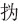

人类的骀荡淫佚，并不仅当朽腐没
落时，面临解放或处在渴望解放的苦闷之下，亦有所表现。北美六十年代性解放，多半就是社会变革苦闷所致，它与左派思潮、黑人民权运动、蓝调摇滚、大麻、反战同生共随。我们对明末崇、弘间南京的秦淮香艳，也觉得可以如是观，而非区区“反礼教”之类陈词滥调可明了者。
读《同人集》《板桥杂记》等，每每想到秦淮河畔的情形与“世纪末”时期巴黎塞纳河左岸颇有几分相似。那里，充斥着精神和肉体自我放逐，自比波希米亚人，以漂泊、流浪为乐事的反传统艺术家。而崇、弘之间的南京，也有一个飘浮无根、萍水相逢、客居游荡的群体——那些因赶考而聚集南京的青年举子，很多人后来已经忘掉原来的目的，或把它降到次要的位置，他们几年以至十几年滞留南京（冒辟疆、侯方域都是如此），参加一轮又一轮乡试，而一次又一次失利，却仿佛乐此不疲、心满意足。
冒辟疆于桃叶渡大会即席赋诗放歌，头四句说：
昨日浪饮桃花南，今日浪饮恶木西。自笑飘流若无主，逃酣寄傲天地宽。[62]
看看那些字眼：昨日浪饮、今日浪饮、飘流、无主、天地宽，这难道不是解放的一代吗？
他们热爱和享受南京的氛围，在秦淮安营扎寨，少数有钱可以住得阔绰，多数只是像三十年代上海左翼文人那样住小阁楼、亭子间，却体会着自由、无羁、思想充实、四方“同人”其乐融融的全新生活，“今日姚兄送我一舟，即泊小寓河亭之下，又送媚兄来，朱尔兼、顾仲恭、张幼青诸兄俱在我舟，吾兄可竟到我处……”[63]“送我入场，感辟疆。多此三日夜辛苦，又当怪辟疆也。明早乞同去侯朝老处，与李香快谭（谈）。”[64]读此，觉得这些明代书生的生存情状没有任何方巾气，倒与很多现代自由知识分子、学生思想群落的景象，不分轩轾。
对这些精神流浪者，旧院成为极好
的润滑剂。性的风骚和思想的风骚，天然投合，彼此激发，新鲜和解放的生命意识在放浪、驰荡之中获得更多的能量和刺激。整个古代，只有在崇、弘之际的南京，娇娃丽姬才超越买欢卖笑角色，而成为众星捧月的社交中心，和近代欧洲名媛一样，她们的居处，分明就是南京的思想和文化沙龙。《板桥杂记》写到李十娘：
性嗜洁，能鼓琴清歌，略涉文墨，爱文人才士。所居曲房秘室，帷帐尊彝，楚楚有致；中构长轩，轩左种老梅一树，花时香雪霏拂几榻，轩右种梧桐二株，巨竹十数竿，晨夕洗桐拭竹，翠色可餐。入其室者，疑非尘境。余每有同人诗文之会，必至其家，每客用一精婢侍砚席，磨隃麋，爇都梁，供茗果。暮则合乐酒宴，尽欢而散。然宾主秩然，不及于乱。[65]
这样的场所，明显不仅是男欢女爱之地，而演变为公共思想的空间。它的出现，证明了南京公共思想的活跃，也证明了开展这种思想交流的强烈需求。它是对“庙堂”式思想空间的打破、破除，这里所论所谈，必非冠带之说、茧疥之思，而无忌无拘、放任自由。它是自由思想地带，也是个性地带，“狭邪之游，君子所戒”[66]，青楼非书斋，君子可留书斋不必来此，来此即不必道貌岸然，而要嘻笑怒骂、真性示人。然而，秦淮河畔的个性，不再是“独坐幽篁里，弹琴复长啸”，不再是魏晋风度，不再是孤高自许、自外于世，这里的个性解放指向社会解放，以历史变革为己任，追求群体价值认同……
聚会、宴饮、放谈，追逐名媛、沉湎爱情。这样的场景，我们在十八世纪欧洲（尤其法国）许多小说、戏剧、诗歌、传记、绘画中见过。比它早一百年，“衣冠文物，盛于江南，文采风流，甲于海内”的南京，也曾有过。这既非巧合，也非形似，而发乎同样的时代和精神气质。可惜“千古江潮恨朔风”[67]，白山黑水的寒流，将此一扫而空。又可惜时湮代远，中间隔了三四百年之后，今人既不知道也不理解当时究竟发生了什么，说起秦淮香艳，仅目之为花间月下。
余怀以将近耄耋之年写就的《板桥杂记》，而今似乎已成一篇花柳实录，只从窥淫的角度引起阅读兴趣。无人去思考，那颗古稀之心，何以被年少之际狭邪往事久久稽淹；也无人注意他自序中的表白：
聊记见闻，用编汗简，效东京梦华之录，标崖公蚬斗之名。岂徒狭邪之是述、艳冶之是传也哉！
东京梦华之录，即《东京梦华录》。此书乃孟元老南渡之后，为繁华汴梁献上的追忆。余怀效之，以《板桥杂记》为锦绣南京——尤其是崇、弘间我所称的那段“革命和爱情”——奠祭。书中叹道，鼎革后，“间亦过之，蒿藜满眼”。“红牙碧串，妙舞清歌，不可得而闻也；洞房绮疏，湘帘绣幕，不可得而见也；名花瑶草，锦瑟犀毗，不可得而赏也”[68]。尤侗为该书题言，亦曰：“未及百年，美人黄土矣！回首梦华，可胜慨哉！”[69]
岂止现在，清代初年，便已不能理解秦淮香艳的内涵。尤侗说，余怀把《板桥杂记》手稿交给他，“示予为序”，有人看到了书稿，不以为然说：“曼翁少年，近于青楼薄倖，老来弄墨，兴复不浅；子方洗心学道，何为案头着阿堵物？”[70]既贬损了余怀，也批评了尤侗。尤侗答以“曼翁纸上有妓，而曼翁笔下故无妓也”。此有妓、无妓之辨，人竟多已不能识，正像尤侗感叹的，“未及百年”而如隔世。透过那位不知其名的俗儒、腐儒之所谓“洗心学道”四字，我们看见明末的个性觉醒、解放和自由精神，在清代怎样荡然一空。
上世纪三十年代，周瘦鹃先生为大东书局校编《板桥杂记》，将大约作于清乾隆庚戌年（1790，据黎松门《续板桥杂记序》）的珠泉居士《续板桥杂记》同时收入。从提供和保存资料角度，很值得感谢，然而，就其文自身言，实有狗尾续貂之感。正像秦淮河水原本活净、如今却污浊不堪一样，珠泉居士津津乐道的“十数年来，裙屐笙歌，依然繁艳”，徒具风尘味，蕴藉全无——此秦淮非彼秦淮，续之何为？
余怀《后跋》说：
余甲申以前，诗文尽焚弃。中有赠答名妓篇语甚多，亦如前尘昔梦，不复记忆。但抽毫点注，我心写兮。亦泗水潜夫记《武林旧事》之意也，知我罪我，余乌足以知之！[71]
他写的不是事和人，是心。而这颗心永远留在了“甲申以前”，那是中国的一段不幸夭折的历史，是一种我们今天已经触摸不到的过去。
[1] 余怀《板桥杂记》上卷雅游，周瘦鹃校阅《板桥杂记（全一册）》，上海大东书局，民国二十二年，第6页。
[2] 同上。
[3] 余怀《板桥杂记》上卷雅游，珠市名妓附见，周瘦鹃校阅《板桥杂记（全一册）》，上海大东书局，民国二十二年，第28页。
[4] 余怀《板桥杂记序》，周瘦鹃校阅《板桥杂记（全一册）》，上海大东书局，民国二十二年，第1页。
[5] 余继登《典故纪闻》，中华书局，1997，第226页。
[6] 余怀《板桥杂记序》，周瘦鹃校阅《板桥杂记（全一册）》，上海大东书局，民国二十二年，第1页。
[7] 黄宗羲《明夷待访录》，《黄宗羲全集》第一册，浙江古籍出版社，1985，第24页。
[8] 董含《三冈识略》卷四江南奏销之祸，安雅楼藏清钞本。
[9] 陈正祥《中国文化地理》，三联书店，1983，第22页。
[10] 张廷玉等《明史》卷七十，志第四十六选举二，中华书局，1974，第1697-1698页。
[11] 张廷玉等《明史》卷六十九，志第四十五选举一，同上，第1679页。
[12] 黄宗羲《明夷待访录》，《黄宗羲全集》第一册，浙江古籍出版社，1985，第20-21页。
[13] 曹雪芹《红楼梦》，人民文学出版社，1981，第2页。
[14] 曹雪芹《红楼梦》，人民文学出版社，1981，第17-18页。
[15] 同上，第61页。
[16] 冯其庸先生在1994年修改后的人民文学出版社校注本前言称：“《红楼梦》的作者伟大作家曹雪芹就是出生在南京的。直到雍正六年曹家抄没后才全家迁回北京。”有此一说，姑备以闻。然而以红学历来的浑沌，我们局外人对其诸说一般难辨真假，未敢轻信。例如，即在此篇前言中，冯其庸对周汝昌等主曹雪芹祖籍为河北丰润之说，就评论为“没有任何根据的臆想”。
[17] 余怀《板桥杂记》上卷雅游，周瘦鹃校阅《板桥杂记（全一册）》，上海大东书局，民国二十二年，第8页。
[18] 孟森《横波夫人考》，《心史丛刊》二集，大东书局，民国二十五年（1936）。
[19] 陈寅恪《柳如是别传》，三联书店，2001，第574页。
[20] 计六奇《明季北略》，中华书局，1984，第609页。
[21] 钱禄《先公田间府君年谱》，《国粹学报》，国粹学报馆，1910年，第七十五期。
[22] 眉史氏《复社纪略》，中国历史研究社编《东林始末》，神州国光社，1947，第167页。
[23] 同上，第168页。
[24] 陈去病《五石脂》，《丹午笔记•吴城日记•五石脂》，江苏古籍出版社，1999，第353页。
[25] 吴翌凤《镫窗丛录》卷一，《涵芬楼秘笈》第九集，六种八册一函，商务印书馆，民国九年。
[26] 冒襄《同人集》卷之四，书，水绘庵清刻本，北京师范大学图书馆藏，第二十三页。
[27] 黄宗羲《思旧录》，《黄宗羲全集》第一册，浙江古籍出版社，1985，第361页。
[28] 余怀《板桥杂记》上卷雅游，周瘦鹃校阅《板桥杂记（全一册）》，上海大东书局，民国二十二年，第3页。
[29] 黄宗羲《思旧录》，《黄宗羲全集》第一册，浙江古籍出版社，1985，第353页。
[30] 同上，第358-359页。
[31] 余怀《板桥杂记》中卷丽品，周瘦鹃校阅《板桥杂记（全一册）》，上海大东书局，民国二十二年，第28-29页。
[32] 冒襄《和书云先生己巳夏寓桃叶渡口感怀原韵》，《同人集》卷之十一，己巳唱和，水绘庵清刻本，北京师范大学图书馆藏，第二十四页。
[33] 同上。
[34] 冒襄《往昔行跋》，《同人集》卷之九，往昔行，水绘庵清刻本，北京师范大学图书馆藏，第五页。
[35] 余怀《板桥杂记》中卷丽品，周瘦鹃校阅《板桥杂记（全一册）》，上海大东书局，民国二十二年，第27-28页。
[36] 黄宗羲《思旧录》，《黄宗羲全集》第一册，浙江古籍出版社，1985，第352页。
[37] 茅盾《我走过的道路》上，人民文学出版社，1981，第357页。
[38] 同上，第361页。
[39] 同上，第351-352页。
[40] 朱希祖《书刘刻贵池本留都防乱揭姓氏后》，《明季史料题跋》，中华书局，1961，第23-24页。
[41] 朱希祖《书刘刻贵池本留都防乱揭姓氏后》，《明季史料题跋》，中华书局，1961，第23页。
[42] 黄宗羲《思旧录》，《黄宗羲全集》第一册，浙江古籍出版社，1985，第357页。
[43] 吴梅村《冒辟疆五十寿序》，《吴梅村全集》卷第三十六文集十四，上海古籍出版社，1990，第773页。
[44] 黄宗羲《明夷待访录》，《黄宗羲全集》第一册，浙江古籍出版社，1985，第10页。
[45] 冒襄《往昔行跋》，《同人集》卷之九，往昔行，水绘庵清刻本，北京师范大学图书馆藏，第三-四页。
[46] 秦际唐《题余澹心板桥杂记》，李金堂校注《板桥杂记（外一种）》前言，上海古籍出版社，2000，第6页。
[47] 陈寅恪《柳如是别传》，三联书店，2001，第4页。
[48] 余怀《板桥杂记》上卷雅游，周瘦鹃校阅《板桥杂记（全一册）》，上海大东书局，民国二十二年，第5页。
[49] 同上，第20页。
[50] 同上。
[51] 吴梅村《过锦树林玉京道人墓并传》，《吴梅村全集》，上海古籍出版社，1990，第250页。下同不赘。
[52] 陈去病《五石脂》，《丹午笔记•吴城日记•五石脂》，江苏古籍出版社，1999，第354-355页。
[53] 余怀《板桥杂记》中卷丽品，周瘦鹃校阅《板桥杂记（全一册）》，上海大东书局，民国二十二年，第21页。
[54] 孟森《横波夫人考》，《心史丛刊》二集，大东书局，民国二十五年（1936），第51页。
[55] 余怀《板桥杂记》下卷轶事，周瘦鹃校阅《板桥杂记（全一册）》，上海大东书局，民国二十二年，第35页。
[56] 陈梁《书》，《同人集》卷之四，书，水绘庵清刻本，北京师范大学图书馆藏，第三十一页。
[57] 余怀《板桥杂记》中卷丽品，周瘦鹃校阅《板桥杂记（全一册）》，上海大东书局，民国二十二年，第16页。
[58] 黄宗羲《思旧录》，《黄宗羲全集》第一册，浙江古籍出版社，1985，第357页。
[59] 孟森《横波夫人考》，《心史丛刊》二集，大东书局，民国二十五年（1936），第29-30页。
[60] 陈梁《书》，《同人集》卷之四，书，水绘庵清刻本，北京师范大学图书馆藏，第二十二页。
[61] 张公亮《结交行同盟眉楼即席作》，《同人集》卷之五，五子同盟诗，水绘庵清刻本，北京师范大学图书馆藏，第二十五页。
[62] 冒辟疆《五子同盟诗》，《同人集》卷之五，五子同盟诗，水绘庵清刻本，北京师范大学图书馆藏，第二十四页。
[63] 陈梁《书》，《同人集》卷之四，书，水绘庵清刻本，北京师范大学图书馆藏，第二十二页。
[64] 同上，第二十九页。
[65] 余怀《板桥杂记》中卷丽品，周瘦鹃校阅《板桥杂记（全一册）》，上海大东书局，民国二十二年，第10-11页。
[66] 余怀《后跋》，周瘦鹃校阅《板桥杂记（全一册）》，上海大东书局，民国二十二年，第45页。
[67] 钱谦益《观闽中林初文孝廉画像读徐新公传书断句诗二首示其子遗民古度》，《有学集》，上海古籍出版社，1996，第35页。
[68] 余怀《板桥杂记序》，周瘦鹃校阅《板桥杂记（全一册）》，上海大东书局，民国二十二年，第1-2页。
[69] 尤侗《题板桥杂记》，周瘦鹃校阅《板桥杂记（全一册）》，上海大东书局，民国二十二年，第1页。
[70] 同上。
[71] 余怀《后跋》，周瘦鹃校阅《板桥杂记（全一册）》，上海大东书局，民国二十二年，第46页。